Bäste Broder i Sällskapet Karl Filip av Vasa,
Denna klädguide riktar sig till dig Broder, gammal som ung, men särskilt de yngre bröder som inte hunnit läsa ett flertal böcker eller texter om hur en gentleman bör klä sig, röra sig och föra sig. Denna klädguide om klädkoden frack alt högtidsdräkt (andra klädkoder kommer senare) i specifikt KFVs sammanhang är framtagen för att ha en baslinje för vad som gäller. Läs därför dessa inledningsord, läs sedan avslutningsorden, och därefter varje sektion i den mån du som broder behöver fräscha upp din kunskap.
Men, först några ord om GROOMING STANDARD.
Följande sektion har inte varit ett problem eller på förekommen anledning i KFV. En gång till; det har inte varit ett tidigare problem eller på förekommen anledning. Men vi tar med det ändå för att det i framtiden inte skall missas något av dessa självklara steg innan en högtidssammankomst.
Det kan nämnas att det finns sex(6) kategorier i den personliga vård av kropp och yttre (grooming standard) som förväntas alltjämt efterlevas i våra sammanhang. Dessa kategorier är:
Kort sagt: hel och ren.
Kläderna närmast kroppen är delvis basen i den perfekta högtidsdräkten. Underkläder, strumpor, undertröja. En kommentar gällande naken eller exponerad hud: för män är det eftersträvansvärt att naken hud bara förekommer ovan kraglinjen och nedan manschettkanten. Övriga huddelar skall vara täckta.
Kommentarer överflödiga då du förväntas veta hur man bär underkläder. NB: Aldrig, någonsin, att man går "Commando" i fracksammanhang i KFV.
Strumpor däremot, här finns det förtydliganden att göra av vad som är rätt modell.
Till fracken skall knästrumpor bäras. Det är den rätta längden för att undvika "The White Stripe". Här är det värt att göra ett inköp på ett (eller flera) par svarta knästrumpor att bära varje gång du bär frack, smoking eller kostym där det absolut kommer vara en blemma om vit-strippan visar sig. När budget och känslan faller på kan man även utöka till andra färger, likt mörkt marinblå, mörkgrå eller annat. Men till fracken är det svart eller, i nödfall, mörkblå strumpor som gäller.
Exempel: Myrqvist svarta knästrumpor
De tre längder på herrstrumpor som kan vara aktuella i KFV illustreras genom beskrivningarna: nedan vaden, halva vaden och ovan vaden (knästrumpa). Knästrumpor är de som garanterat sitter kvar tillräckligt högt uppe när du börjat röra dig (gå, stå och sitta om vartannat), medan halva vaden med lite tur kan sitta kvar (möjligen med den manliga varianten av strumpebandshållare). Modellen nedan vaden kommer garanterat ge upphov till vit-strippan när du sitter ned, särskilt i bekvämare situationer. Kommande avsnitt i klädguiden utökas till strumpor för särskilda varianter vid klädsel smoking och senare kavaj.
Halva-vaden strumpor med strumhållare. Kan fungera men får anses vara en udda fågel jämfört riktiga knästrumpor.

Nedan-vaden som kommer bryta den svarta siluetten så fort broder inte står upp.
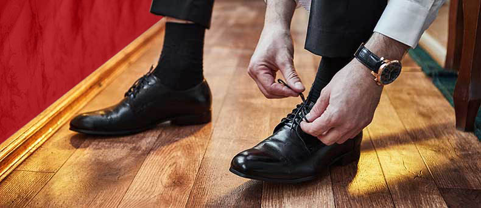
Ett bildexempel på Br Dumanski som vid ett KFV-sammanhang (lågtidsmiddag med klädkod smoking) råkade välja en något för kort strumpa. Se bilderna sida vid sida och se hur helhetsintrycket är så mycket bättre när strumpan täcker som den ska. Ett särskilt, riktat tack till Br Dumanski som gett ssitt godkännande till att använda denna bild i utbildningssyfte då han enligt utsago "har verkligen fått äta upp det strumpvalet :P".

Att ha en undertröja hjälper vid de tillfällen då det synnerligen stärkta skjortbröstet viker sig så att skjortan öppnar sig mellan knapparna (du sitter ner i en väl bekväm ställning). Det är ej önskvärt att se en broders nakna mage eller bringa när skjortan öppnar sig, speciellt när vi sitter till bords.
Modeller: välj en mycket tunn t-shirt eller ärmlös undertröja. Tänk på att tyget bör vara vitt eller ljust grått. Ljusgrått syns mindre igenom vitt skjorttyg.
*Fördel: håller dig varm vid kallare väderlekar och döljer din kropp om skjortan öppnar sig. *Nackdel: kan göra dig svettig vid varmare väderlekar och för många lager på lager.
Exempel: Uniqlo tunn t-shirt
Exempel: Uniqlo tunn ärmlös undertröja
Skor, byxor, skjorta, väst, frackjacka
Det finns skor till frack, och så finns det rätt skor till frack. Det finns även skor som en mindre påläst person kan välja att ha till frack, men som absolut skall undvikas av en broder i KFV när frack bäres.
Här några ord skrivna av KKFV Br Marcus Molander:
Grunden för skodon i alla formella sammanhang oavsett klädkod är
”Svarta, släta, låga snörskor”. Där..
: ”Svarta” anger naturligtvis färgen vilken gäller för hela skons ovansida inklusive skoband (skosnöre)
: ”släta” betyder att sk brouge-modell med perforerad yta eller andra krussiduller på ovanlädret undanbedes
: ”låga” rensar bort kängor eller andra skor med högre skaft
: ”snörskor” anger slutligen att kardborrband eller kanske mer vanligt förekommande resår skall undvikas.
Mest klassisk är s k oxfordmodell med sluten snörning. Även öppen snörning torde dock vara gångbar idag. Tåsöm eller ej är en smaksak. Om sulan är av läder eller försedd med gummi är också valfritt eftersom din sula sällan torde synas närmare.

Skon skall vara välvårdad vilket betyder ren från smuts och putsad med skokräm till någon form av glans. Att putsa sin sko görs helst grundligt och genomarbetat, som i följande video från Davidssons skomakeri. Om din skovårdslåda innehåller nödvändiga verktyg och om du har gott om tid är denna process att rekommendera.
Vid de tillfällen en snabbare men inte lika genomgående vårdprocess önskas eller krävs kan man komma undan med följande: borsta skon ren från smuts så mycket som möjligt. Applicera därefter läderbalsam/återfettningsmedel likt produkten "Skinnfix" och polera med trasa efter bästa förmåga. Detta ger skolädret en godkänd nivå av lyster och välmående men är alltså något att fräscha upp med mellan grundligare genomarbetningar. I båda fallen kan ett lager svart skokräm appliceras efter behov. Vill man känna sig extra välvårdad och elegant kan man med fördel putsa till en glänsande spitshine. Även denna process visas av Davidssons skomakeri.
Lackskor är skor som har fått ytan behandlad med plast eller någon form av olja som gör att de har en permanent glans. Lackskor är ett utpräglat festplagg som inte skall bäras till begravning, examenshögtider eller andra mer formella sammankomster med frack, dvs KFVs högtidsmiddagar. En del ordenssällskap förbjuder t ex användandet av lackskor vid sina sammankomster, men KFV har inte förbud utan litar på sina bröders goda omdöme. Förr bar ofta artister och medlemmar i bandet lackskor (exempelvis Fred Astaire och Matt Monroe) samt s k swingpjattar. Vill man inte sälla sig till den skaran så är en välputsad sko av vanligt läder att föredra. 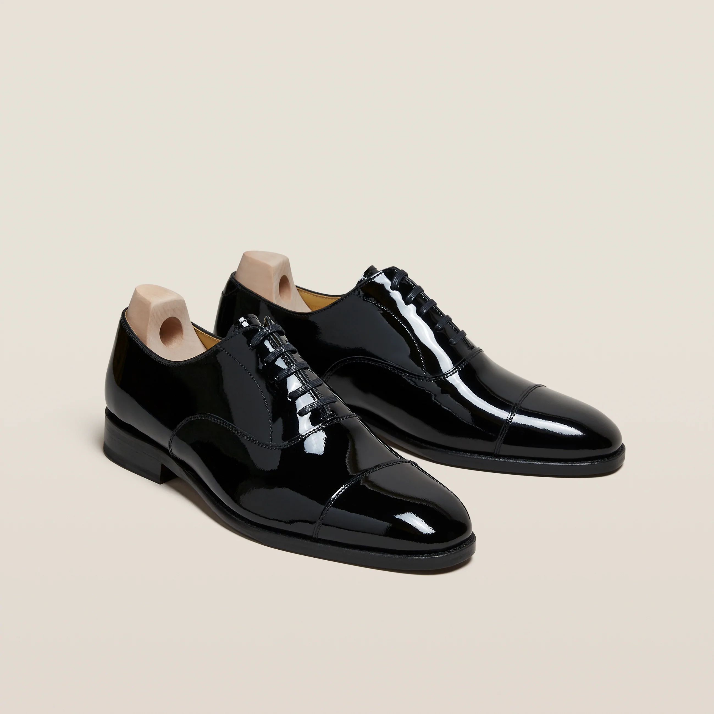
Undantaget är vid de tillfällen då KFV har utpräglad feststämning; som vartannat år vid KFVs bal, där kvinnliga gäster förekommer, och den årligen återkommande Stockholms-fänikans Lågtidsmiddag (klädsel: smoking).
Undantaget 2 är s k bowtie-skor kombinerat med knickers. Detta är en ny variant av frackklädsel som guiden återkommer till efter grundliga efterforskningar. Denna kombination av lackpumps och knickers är en ny företelsee och bärande bland några bröder i KFV. Varken påbud eller förbud mot kombinationen finnes.
![]
Vid svårt väderläge (regn eller snö) bärs galoscher, bottiner eller pampuscher (det sistnämnda dock för damer). Skulle vädret vara mycket kallt så går det bra att bära rejälare kängor eller stövlar under transport som bytes mot skor vid ankomst till lokalen. Tumregeln är att om man kan bära päls som ytterplagg så kan man bära vinterstövlar.
Här följer några exempel på, som mot bakgrund av ovan nämnda indelningar, alltså skall anses, till frack och KFVs herrsällskapsmässiga högtidsmiddagar, vara ej rätt skor. Men, allt givet allt, så är lackskor alltjämt det minst felaktiga alternativet av dessa listade. Övriga exempel på skor (brogue, resårskor, mörkbruna) är alltså direkt fel och skall ej bäras vid KFV högtidsmiddagar.
 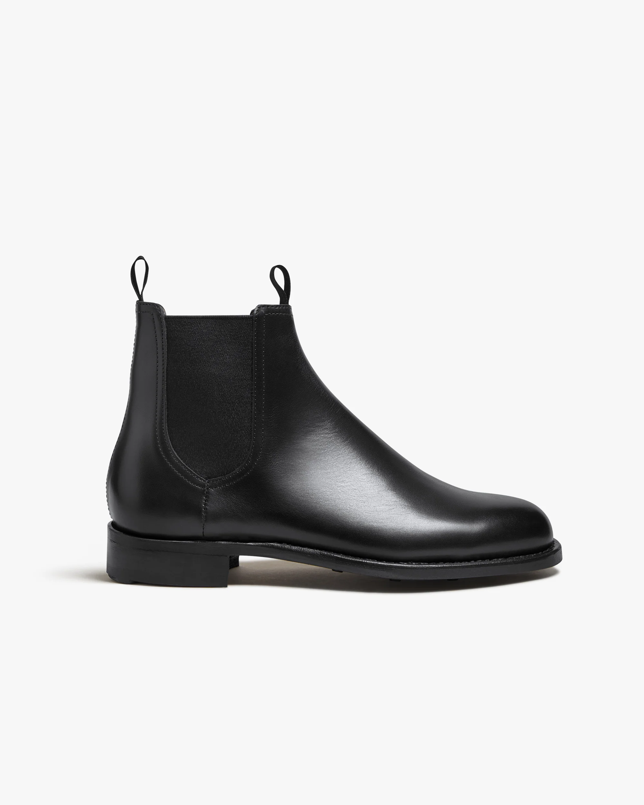
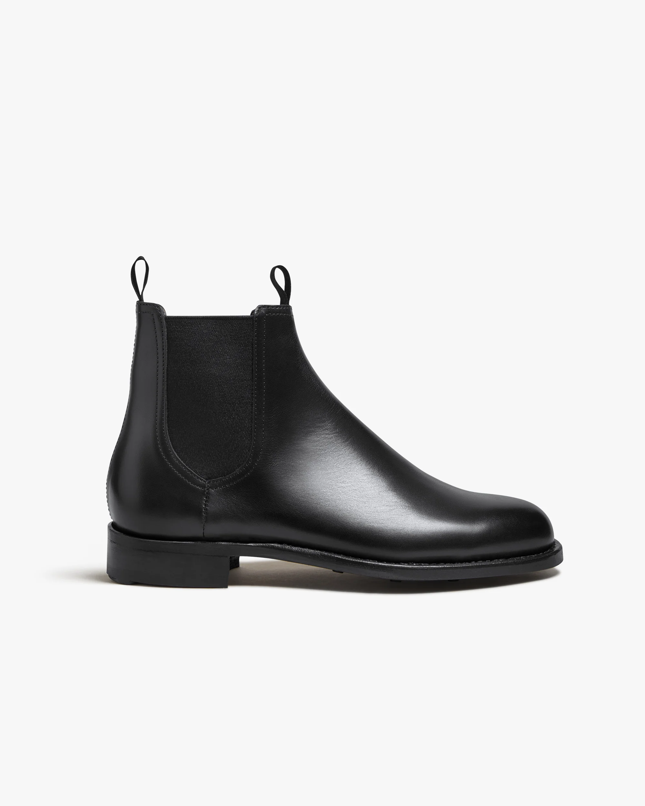


Inledningsvis: en beskrivning från TailorStore.se säger att "frackskjortan skall vara en vit bomullsskjorta med piképanel framtill som stärker upp. Kragen är alltid en styvt uppfälld snibbkrage (vingkrage). Spetsarna kan vila över flugan eller sitta mer modernt, precis bakom." Kommentar: I KFV finns det ännu ingen uttalad klädregel kring var snibbarna skall vila men generellt i KFVs sammanhang bäres snibbarna oftast, om än inte alltid, bakom flugans vingar.
För den extra krispiga känslan på skjortbröstet rekommenderas att använda klassikern "Spraystärk" eller motsvarande.
Vidare bör man försäkra sig om att skjortan är tillräckligt lång och går så pass långt ner längs kroppen för att i möjligaste mån inte hasa upp och exponera huden vid byxlinningen. Exempelvis om man sätter sig ner eller böjer sig ner för att knyta sina skor.
I enligthet med KFVs strävan efter det lilla extra från en svunnen tid, förr, då det var bättre, bör en skjorta avsedd för löstagbara bröstknappar väljas. Manschettknappar mä väljas efter eget val och egen smak. Om man vill leta efter det lilla extra så kan man hålla utik efter en skjorta med s k Napoleon-ficka, en öppning som underlättar montering av de lösa bröstknapparna.
Som tidigare nämnt är det vingkrage som gäller. När det gäller skjortmodeller med löstagarbara kragar bör följande beaktas:
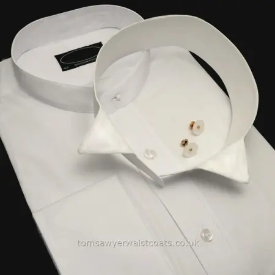
Exempel online: https://www.newandlingwood.com/mens-accessories/stiff-collars/regular-wing-stiff-collar
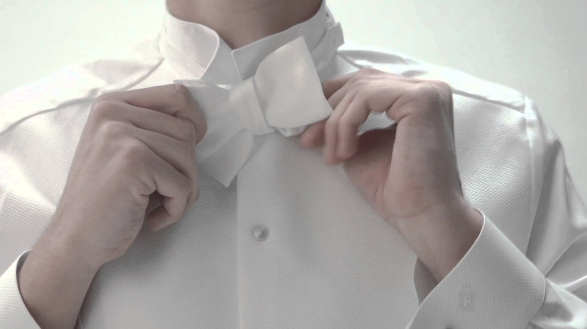
I KFV uppmuntras nyttjade av egenknuten fluga, eller som det kallades förr: vit rosett. Detta för att det är mer värdigt och karaktärsvisande än de färdigknutna flugorna. Om det fanns färdigknutna slipsar, skulle vi i KFV uppmuntra egenknutna eller färdigknutna sådana?
Hur man knyter sin egen fluga finns det ett flertalet filmer på Youtube som visar men en enkel realitet och insikt bör göra så att envar broder hädanefter kan bemästra den med förbundna ögon;
"Att knyta en fluga är samma sak som att knyta en skoknut... fast med breda band."
Byxmodellen som gäller är frackbyxor, standardmodell med revär längs benet. När du bär byxorna är det viktig att dessa inte hasar ner på höfterna likt hur så kallade jeans kan sitta på kroppen. Byxorna skall sitta så högt upp att en "white stripe" från skjortan ej uppstår mellan byxlinningen och västens nedre kan.
Notera exempel på Br Almgren, innan han insåg sina egna klädsynder, och hade sina byxor för långt ner på höfterna. Det som räddar intrycket är ju att det är vitt på vitt, men det grämer Br Almgren att en sådan Hollywood-klass på bild inte uppnår perfektion när man vet vad man skall titta efter.
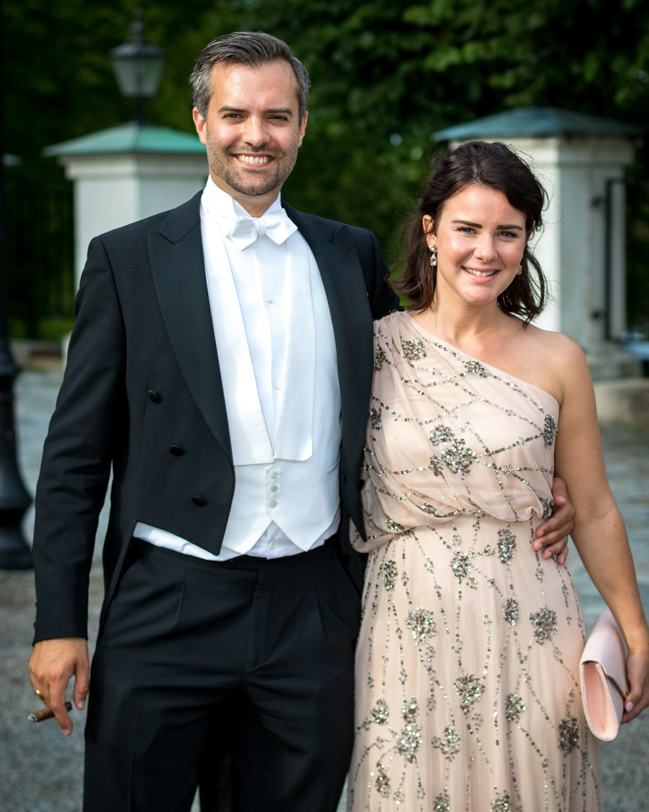
Hur håller man byxorna uppe på rätt sätt?
KFVs högtidsmiddagar innebär herrsällskap, således svart väst.
KFVs bal med gäster, kvinnliga såväl som manliga sådana, innebär vit väst.
Västen skall, som redan nämnts gällande byxornas höjd, gå så pass långt ner att den täcker byxlinningens kant.
Därutöver skall västen gå så långt ner att den hamnar i två kategorier beroende på åsikt och preferens:
Alt 1. Västen går 1-1,5 cm nedanför frackjackans nedre del.

Alt 2. Västen slutar i exakt samma höjd eller 0,5-1 cm ovanför frackjackans nedre del. Detta ger "en svart sammanhängande linje från axel till ankel".

Det finns i dagsläget anhängare av båda alternativen i KFV, varför regeln tills vidare får besvaras så. Dock är rekommendationen att välja alt 2 som fungerar för både svart och vit väst.
Västen kan vara single eller double-breasted i modellen, dvs enkel- eller dubbelknäppt.
Gällande framsidan så finns två kända skärningar; V och U. Notera att vid KFVs högtidstillfällen är båda modellerna uppmuntrade och acceptabla att bära.
V-skärning. Den vanligaste standardmodellen på frackväst. Kan ha kortare eller längre snibbar nedtill.
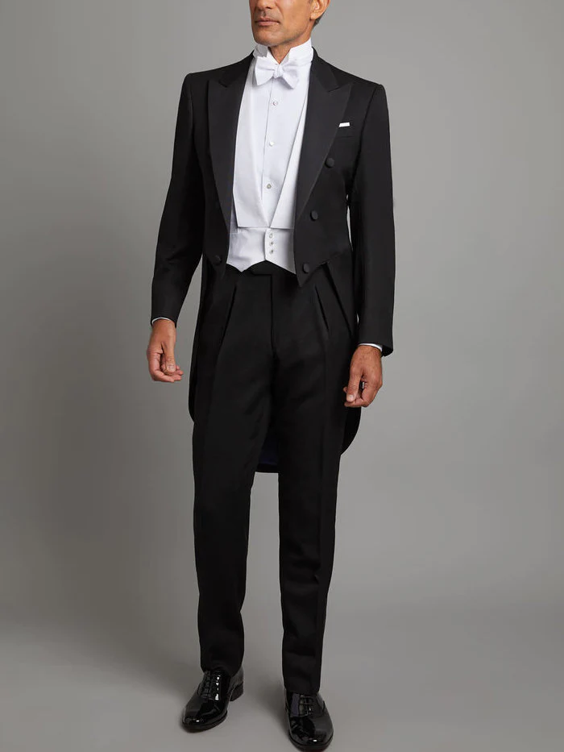
U-skärning. Vanligt förekommande bland Försvarsmakten och Polismyndigheten då denna modell ingår i deras klädkod för högtidsdräkt. Finns i enkel- och dubbelknäppt modell.
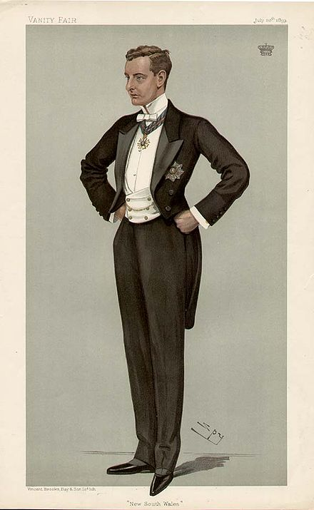
Nedan ett trevligt exempel på bröder från Högtidsmiddag där kombinationerna enkelknäppt V-skärning samt dubbelknäppt U-skärning visas.

Gällande baksidan så finns även där två modeller: öppen rygg och sluten rygg.
Öppen rygg: vanligt förekommande i "ditt första frack-kit". Är vanligtvis mera budgetvänlig och är delvis en fråga om att samma modell lättare skall passa många kroppstyper. Modellen har ett justerbart band om nacken, höften och ryggen. Att den inte gör bäraren lika varm och ev svettig är en annan egenskap. Dock är det svårt att få modellen att sitta snyggt vid axlarna, ty tyget slutar nära nyckelbenen och kan ge ett konstigt intryck. Notera följande brödrabild Br Almgren: den kant som uppstår vid västens slut närmast nyckelbenet bryter linjer och siluett, vilket får accepteras i den mer budgetvänliga modellen av väst. När budget och tillfälle ges är rekommendationen att införskaffa sådan väst som behåller linje och siluett.
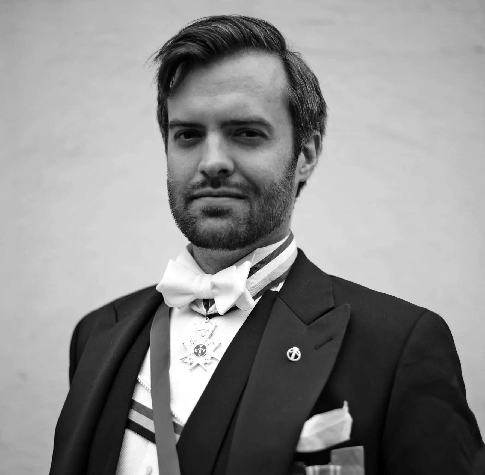
Sluten rygg: vanligare när man genom livet uppgraderar sin frack bortom budgetstadiet. Är oftast storleksanpassad (likt byx- och kavajstorlekar), samt något mera premium i tyget. Ger snyggare helhetsintryck och erbjuder en möjlighet till vissa modifikationer efter bärarens tycke och smak; nya knappar eller nytt ryggtyg.
Ledamotsbandet och Riddartecknet anges att bäras enligt Sällskapets lilla Blå bok. Minnesregel för ledamöter: "Moln över Havet" - det vita ovan det blå i ledamotsbandet samt max tre band över bröstet. Det band som är viktigast överst (du vet vilket) och därefter i fallande ordning.
Vidare gäller för halskors:
Kommentarer från Jonas Arnell-Szurkos, Ordenshärold vid Kunglig Maj:ts Orden och involverad i återinförandet av det svensa ordensväsendet. Även känd som Ordens-Jonar
Halskors skall bäras direkt under flugan, vit rosett, så att bandöglan är så pass nära flugans mittband som möjligt utan att strypa bäraren. [Bild på detta]
För de bröder som prästvigts och därmed har möjlighet att bära prästdräkt gäller att halskorsbandet skall vara så långt att hörnorna på prästkragens "vita elva" ej täcker halskorsets band. [Bildexempel JA/NEJ].
Gällande fästning bakom nacken: här gäller att med tillgängliga medel göra bandet lika "snyggt och ordnat" som om det vore ett helt band hängt runt din hals. Det är lite mer utmanande att säga entydigt vad som är rätt och vad som är fel, men här några exempel från enkelt till ambitöst.
Mer om bärandeordning, fästen och instruktioner finns att tillgå enligt:
Frackjackan, kavajen, är tämligen standardiserad. Det går att köpa upp sig över tid till mer premium men skillnaderna kan vara svåra att se. Det man kan variera är kragen och dess kvalitet, och därmed några ord om broderade kragar från HBD[2] Bandstein:
Broderade kragar har en lång historia inom det militära och symboliserar tillhörighet, rang och status. Ju större, mer intrikat brodyr och påkostad krage, desto större värdighet på bäraren. Ett gott exempel är Karl XIV Johans franska marskalksuniform broderad med guldtråd som täcker större delen av kragen.
Under 1820 talet började de svenska kungliga ämbetsverken använda broderade kragar med reglementerad svart silketbrodyr på svarta sammetskragar. Den akademiska kragen började växa fram i Uppsala i mitten av 1800-talet med fem olika grader: student, magister, doktor, docent och professor. Detta finns omnämnt år 1845 av August Blanche i den korta romanen Järnbäraren:
”Tolv år efter tilldragelsen på Carl XIII:s torg sammanträdde en vinterkväll ”Sällskapet för danssoaréer”. Det var en lysande bal, herrar och damer vimlade om varandra. Bland de ivrigast dansande kavaljererna utmärkte sig för sin resliga växt och sitt fördelaktiga ansikte en yngling. Den lilla silkeslyran på sammetskragen tillkännagav en välbeställd liber studiosus och rosorna på kinderna talade om sexton väl vårdade levnadsår”
Lyran är den genomgående symbolen för alla upsaliensiska akademikragar - oberoende av fakultet. Lyran lär vara en symbol för Uppsala universitet då den är en erkänd symbol för klassisk bildning. Ursprungligen är symboliken lånad från Apollons attribut.
Apollon var konstens, diktens och vetenskapens gud och representerar därför i detta sammanhang all högre utbildning vid universitetet. I KFV syns också detta i utdelandet av artes-tecken för den broder som utmärkt sig inom konsterna, dock i en snävare kontext än vad universitetet ursprungligen menat att symbolisera med lyran. [Bild på kragen och artestecken sida vid sida]
De tre första graderna omhuldas lyran av lagerblad där studentkragen har ett sparsamt kransverk som sedan växer med tilltagande kunskap och examensnivå. På docent- och professorskragen växer kransverket ytterligare men varvas med lagerblad och ekblad. Eken var Zeus' träd i den grekiska mytologin och ekkransen utdelades av romarna för medborgerlig förtjänst.
Andra svenska universitet har andra symboler och traditioner för de akademiska kragarna. Det har därmed inte förekommit någon nationell harmonisering av denna kulturskatt. Hantverket för att skapa en akademikrage är mycket krävande och komplicerat. Det tar därför lång tid och gör kragen tämligen dyr. Kombinationen leder till att få kragar produceras årligen och hantverket blir utrotningshotat. I skrivande stund finns endast två brodöser i Sverige som bär arvet vidare (i Lund och Uppsala). Bröder i KFV uppmuntras att bidra till bevarandet av traditionen genom att om möjligt pryda sin frack med en broderad krage.
Källa: Lundin, Tom (2019) Akademiska frackkragar. Universitets- och studenthistoriska sällskapet. Uppsala
Betänk att medaljer enligt bärandeordning egentligen skall fästas uppåt och ovanför bröstfickan, med medaljerna hängande framför fickan och dess öppning. Vi låter denna sektion tills vidare vara öppen för diskussion.
I KFVs sammanhang är det vanligt att sällskapsnålen bäres på frackslaget. Det skall nämnas att det inte är obligatoriskt men väldigt vanligt förekommande. Nuvarande kansler och tidigare kanslers bär oftast den särskilda kanslersnålen.
Det finns dock flera nålar att bära (nål från t.ex. Strängnäsceremonin, kuratorsnål m.m.) och några ord om hur många och vilken.
Hur många i ett kluster, vilka nålar etc.
De olika förhållningssätten till bärande av medaljer innebär följande:
[Bild på Rex? - Jag har väldigt många medaljer, det har man när man har gjort någonting bra.]
Några ord om montering av medaljer från KKFV Peter Johan "PJ" Lind.
Till högtidsdräkt (frack, kaftan, folkdräkt och uniform) kan utmärkelser bäras. Med utmärkelser menas medaljer, tecken, etc. som tilldelats dig, broder, personligen såsom belöning för insats (i regel medaljer) eller såsom rangmarkör (ledamotsband, riddartecken, etc.).
I Sverige bäres medaljer i en (1) rad. Medaljer att bäras på bröstet bör om de är fler än 2 monteras ihop. Är de fler än 3 till antalet monteras de omlott. För officiella utmärkelser och tecken är detta att betrakta som obligatoriskt, för sällskapsinterna dito är det inte lika strikt (även om det givetvis ser mycket prydligare ut). För den broder som känner sig bekväm med nål och tråd (eller inte är i ekonomisk sits att be ett proffs göra jobbet) finns ett antal instruktionsvideor för montage på YouTube.
Påpekas skall att officiella medaljer och tecken inte bör monteras ihop med icke officiella.
Medaljer i original fästes strax ovanför bröstfickan, näsduk bäres således inte.
Miniatyrmedaljer fästes på frackrockens vänstra slag (från bäraren sett) och näsduk bäres i de fall bandbredden inte går över slagets kant.
För den extravagant lagde brodern kan miniatyrer bäras (utan band) i kedja över frackrockens vänstra slag (från bäraren sett). För att denna montering ska vara aktuell bör utmärkelserna vara minst 3 till antalet.
Traditionellt bäres icke nålar i frackrockens slag. I sällskapets hägn förekommer dock bärandet av såväl våra egna nålar (sällskapets nål, kanslersnål, Strängnäsnål, etc.) som andra studentikosa dito (t.ex. nations- och kuratorsnålar). Broder bör dock ha i åtanke:
att nålar i en del fall (s.k. ordensknapp eller bouton) ersätter ordenstecken vilket indikerar att de inte ska bäras samtidigt
att miniatyrmedaljer (i band som i kedja) och nålar konkurrerar om samma utrymme på slaget och gifter sig därför inte
att i det fall nål prompt ska bäras på slaget begränsa antalet, helst till 1 och i alla händelser inte fler än 3.
Undvik armbandsur i samband med frack. När det är fest eller högtid ska man vara “utan tid” – men ett fickur i frackens väst går bra.
Här ett stycke på ämnet skrivet av Br Martin Strålenhielm:
Klockkedjan och rovan.
När man talar om bärande av fickur eller rova bör fokus läggas på kedjan. Klockkedjan är nämligen ett av få smycken vi herrar fritt får bestämma över hur det skall se ut - så länge det följer vissa regler.
Kedjan skall vara av samma material som fickuret och inte sitta för spänt eller löst. Den ska fästas i ett knapphål (eller runt en knapp) strax över västfickan och förvaras i vänster ficka. En dubbel kedja kan användas, särskilt om fickuret kräver en urnyckel, och kan då gå över till höger västficka (i studentlivets Uppsala kan exempelvis en kapsylöppnare eller fickkniv dölja sig i andra ändan). Utsmyckning av kedjan kan ske med kors, signeter, ordensdetaljer eller annat som tjänar till västens prydande.
Bärandet av fickur i höger västficka kommer från ban- och tågpersonalen. Där behövde man kunna hålla i sig med vänster hand och behövde således ha fickuret i höger ficka.
Historiskt (1930-talet) skedde ett skifte i bärandet av fickur till frack. Innan dess fästes aldrig fickuret i frackvästen, utan när högtidsdräkt var påkallat fästes fickuret i vänster hängselstropp och rovan förvarades således i vänster byxficka. Innan kedjornas tid bars uret i en utsmyckad stropp i en ändamålsenlig separat byxficka.
Fickuret eller rovan bör vara av silver, platina eller guld och bör historiskt vara utan lock. Lock eller förvaringsaskar användes primärt för att skydda rovan under arbete (vilket dock kom att förändras i och med att lockens utsmyckning ökade).
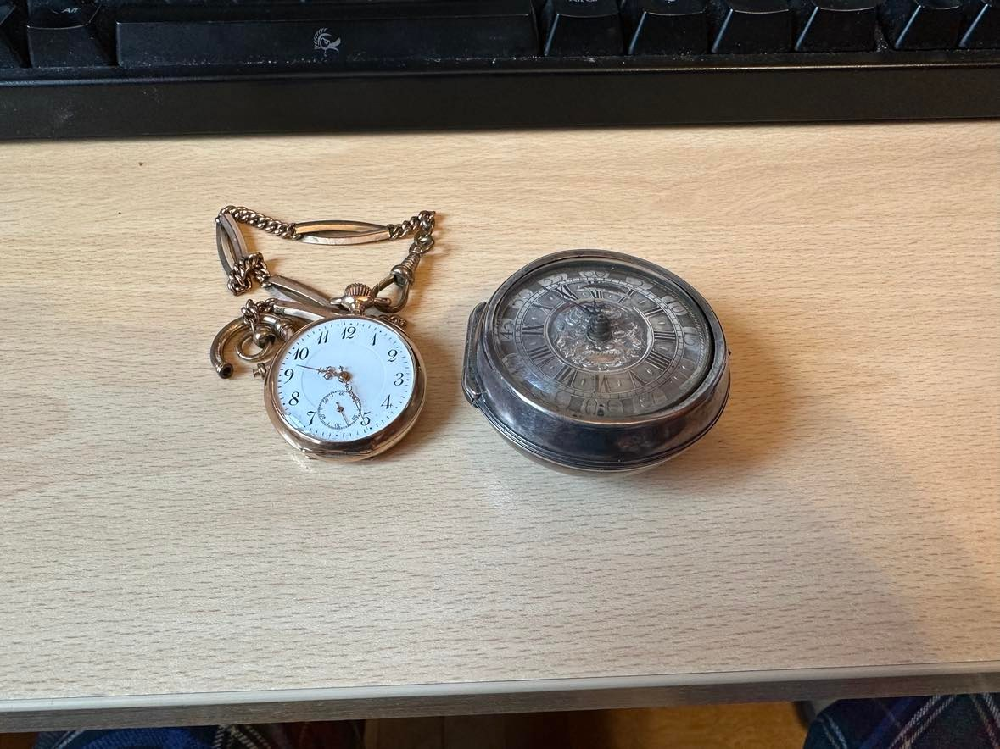
Urens storlek har varierat utefter mode. Rovorna bars alltid i byxfickan då storleken gjorde att de inte fick plats i andra fickor. När de blev mindre och smalare kunde de flyttas upp till västens fickor och storlekarna varierade mer. I dag ser man många äldre ur som kallas för mormorsur (eller damur) även om de var tillverkade för män. De “äkta” damuren hängde ofta i en kedja runt halsen och hade därför uppdragskronan mitt för 6:an på urtavlan.
Några ord från Br Jakob Sidenvall om sommar- respektive vintermodell på Uppsalamössan.
Ytterligare några ord från HBD[2] Bandstein.
Bärandet av Doktorshatt:
Sedan att en doctor iuvenis mottagit sin doktorshatt och klivit ner från parnassen bär denne tre symboler: diplomet försett med universitetets sigill, guldringen som symboliserar trohet mot vetenskapen och doktorshatten.
Doktorshatten symboliserar frihet men också makt. Den är svart och veckad. Teologisk hatt har svart rosett men vid de övriga fakulteterna har den ett spänne, innefattande fakultetens symbol. Hatten utdelas vid promotion inom de så kallade högre fakulteterna, det vill säga de teologiska, juridiska, medicinska och farmaceutiska.
Efter detta brukas doktorshatten inomhus endast vid doktorspromotioner. Som huvudbonad för utomhusbruk kan den dock mer frekvent komma till användning i kombination med högtidsdräkt, alltså när en odisputerad person skulle ha hög hatt.
Dessutom bars doktorshatten förr till begravning, även till mörk kostym, för att hedra den avlidne men det har blivit alltmer sällsynt. Doktorshatt bäres ej till militär uniform.
Källor: Per Ström och Tom Lundin
Om vädret påkallar det, bör något bäras ovanpå fracken. En snygg rock som täcker hela vägen ner till frackjackans skört är det vanligaste alternativet.
Det finns även de som skaffat sig en mantel att bära istället för rock. "Lite stekigare, lite mera flex", som den avundsjuke yngligen skulle uttrycka det. Tänk på att mörkblått upplevs som mer svart än svart om kvällen och natten.
Utifrån de riktlinjer som lagts fram i denna guide kommer vi framgent kunna vara mer korrekt klädda enligt de förväntningar vi har på våra högtidssammanhang i KFV.
Det skall dock ihågkommas att även om vi broderligt kan påminna eller justera en annan broders klädsel och detaljer till det rätta, så bör vi även hålla "god ton" genom att välja dessa tillfällen varsamt utifrån följande riktlinjer:
Om det är enkelt att justera (en sned nål, ett felvänt band, en vriden fluga) så är det i sin ordning. Om det är svårt att åtgärda felet på plats (felvalda skor för tillfället) så är det bättre att påminna om detta vid ett senare tillfälle. Annars kan en olustig känsla av att vara felklädd lägga sordin på resten av kvällen för berörd broder. Låt brodern därför ha trevligt och roligt för tillfället och lämna den (nästan obligatoriska) broderliga och hjärtlösa roasten till dagen efter.
Denna version skriven i mars/april 2023. Huvudansvarig KKFV Oscar Almgren, med sektionsförfattare KKFV Marcus Molander, KKFV Marcus Bandstein, KKFV PJ Lind, RKFV Martin Strålenhielm. Korrekturläsning KStKKFV Eric Bylander.
[1] - https://kungligmajestatsorden.se/om-kmo/anvisning-barande
[2] - Herr Broder Doktor, HBD.